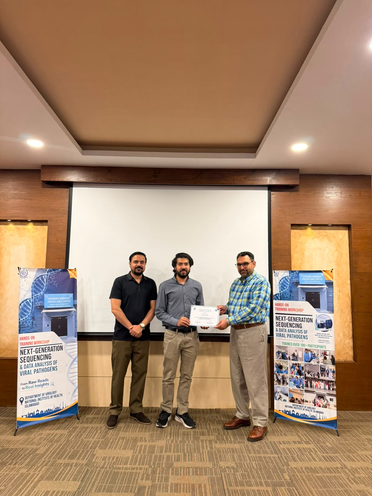
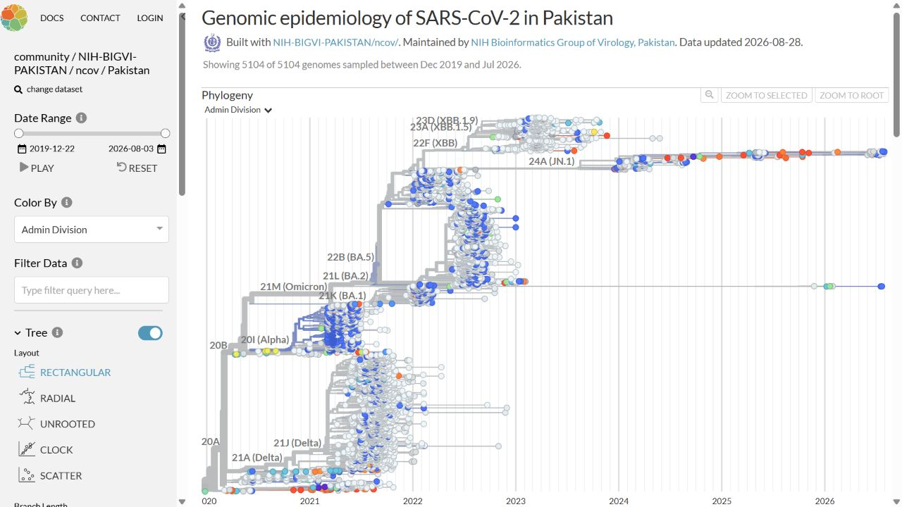
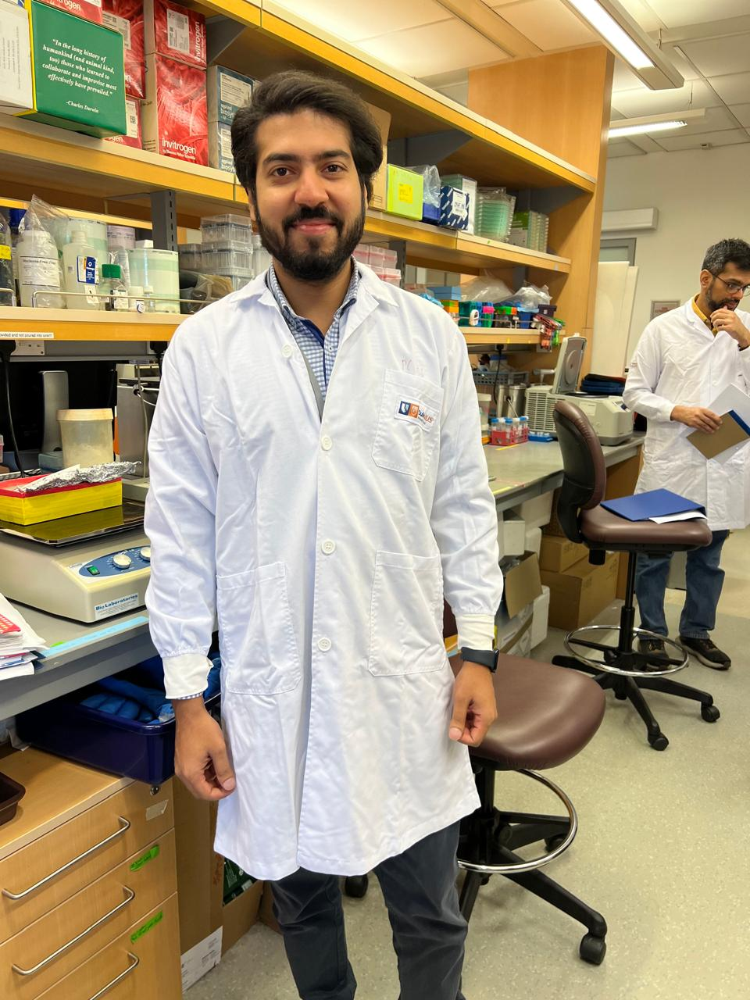
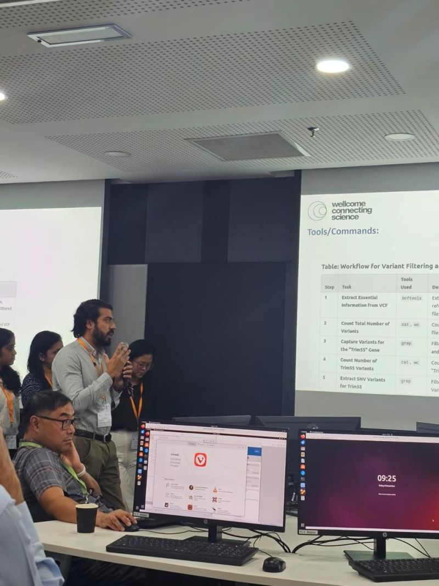
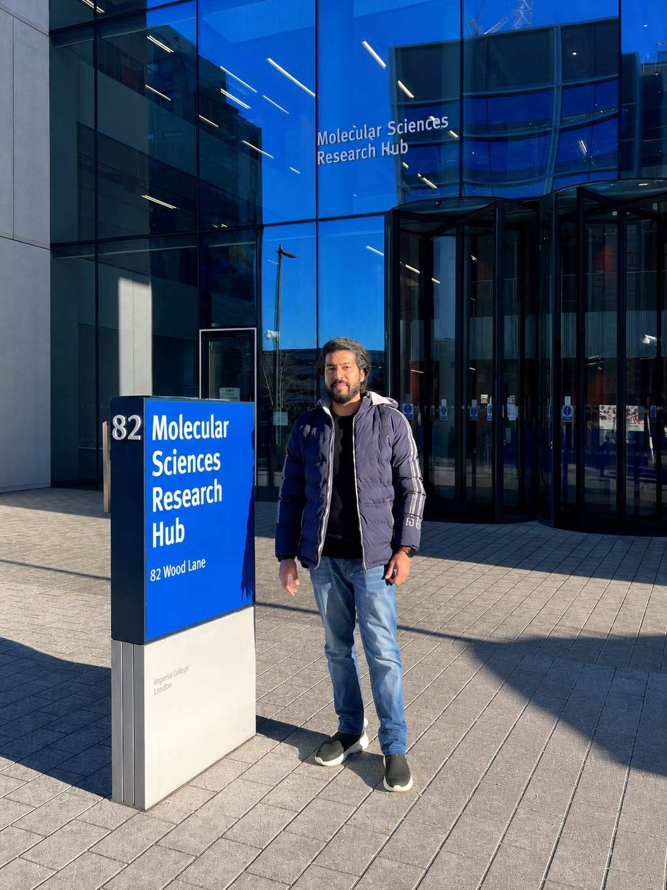

How can genomic surveillance detect viral threats earlier?
Integrating molecular assays, metagenomic discovery, targeted sequencing, and clinical and environmental sampling to identify credible signals before outbreaks become obvious.
Genomics since 2015
Research Scientist in the Department of Virology, National Institute of Health, Islamabad, Pakistan. I connect molecular biology, laboratory sequencing, reproducible bioinformatics, and genomic surveillance across emerging, re-emerging, and other priority viral pathogens—including poliovirus—to produce evidence that public-health teams can use.
Maintaining Pakistan SARS-CoV-2 Nextstrain Community Build ↗
Research interests & selected directions
I am interested in how integrated molecular and computational approaches can detect viral threats earlier,
explain how they spread and evolve, and turn genomic evidence into practical surveillance systems.
These themes define a core direction while remaining adaptable to adjacent questions in pathogen genomics,
bioinformatics, molecular surveillance, and public-health implementation.
Read the full research agenda ↗
Integrating molecular assays, metagenomic discovery, targeted sequencing, and clinical and environmental sampling to identify credible signals before outbreaks become obvious.
Phylogenetics, phylodynamics, variant and antigenic-site interpretation, and epidemiological context to distinguish introductions, sustained transmission, and meaningful change.
Reproducible workflows, public-safe data, traceable reporting, SOPs, and training that make sequencing useful and sustainable in resource-limited settings.
Research, collaboration & training
Experience & education
The trajectory moves from clinical sequencing and variant interpretation to genomic surveillance, outbreak response, and deployable workflows for emerging, re-emerging, and priority viral pathogens—including poliovirus.
Work spans molecular biology, clinical and environmental sample processing, Illumina/ONT sequencing, reproducible bioinformatics, phylogenetic and phylodynamic interpretation, and public-health reporting for emerging, re-emerging, and priority viral pathogens—including poliovirus.
Contributed to national viral genomic surveillance, outbreak response, pathogen pipelines, phylogenetics, dashboards, and staff mentoring.
Clinical whole-exome sequencing, targeted panels, variant interpretation, clinician-facing reporting, QC, and laboratory operations.
Selected publications
Author position, study question, method, and primary evidence help reviewers understand the contribution—not just count papers.
Journal of Virological Methods 338, 115213
A first-author study using metagenomic next-generation sequencing and whole-genome analysis to characterize CV-A24v during the 2023 outbreak in Islamabad.
RSV whole-genome analysis with outbreak and mutation context.
↗ 2024 · Co-first author · Dengue Serotype and genomic diversity of dengue virus during the 2023 outbreak in PakistanDENV-1 and DENV-2 genomic diversity and phylogenetic interpretation.
↗ 2024 · Co-first author · SARS-CoV-2 Genomic epidemiology and phylogeography during and after Pakistan’s sixth waveVariant dynamics placed in temporal and geographic context.
↗ 2026 · Collaborative output · Respiratory surveillance Influenza, SARS-CoV-2, and RSV surveillance in Islamabad and RawalpindiA recent multi-pathogen genomics contribution.
↗Selected workflows & maintained public resources
A conservative, panel-driven metagenomic workflow for host subtraction, candidate screening, competitive confirmatory mapping, coverage assessment, and evidence-based follow-up.

I maintain the reproducible analysis and publishing workflow behind the NIH Bioinformatics Group of Virology’s Pakistan-focused SARS-CoV-2 Nextstrain Community build. It combines quality control, time-resolved phylogenetic analysis, and an interactive public view for transparent genomic-surveillance communication.
An auditable VP1 analysis and reporting pipeline for Oxford Nanopore MinION data, spanning barcode-folder review, reference screening, coverage assessment, consensus attempts, and structured HTML reporting.
Integrated case · direct-detection nanopore sequencing
Within the NIH–Imperial direct-detection nanopore sequencing (DDNS) collaboration, I work across laboratory processing, Oxford Nanopore sequencing, analysis review, and evidence-based reporting for stool and wastewater surveillance samples.
Role: Collaborative method development with Imperial College London; the public repository documents the analysis and reporting component.
Contributed Illumina MiSeq workflow development and automated analysis for culture-positive sewage surveillance samples within this NIH-led deep-sequencing initiative.
A reproducible Illumina and Snakemake workflow for consensus generation, coverage assessment, antigenic-site interpretation, and phylogenetic analysis of post-culture data.
A reproducible R workflow demonstrated with wild poliovirus type 1 using public-safe synthetic data.



Training & scientific engagement
Selected specialist training, scientific exchange, facilitation, and hands-on teaching across Pakistan, the United Kingdom, Malaysia, and Singapore.
The work, end to end
One connected workflow across laboratory practice, computation, quality review, and communication.
Research notes
Peer review & professional service
I contribute through open peer review, invited journal review, and professional communities focused on pathogen genomics and infectious diseases.
Published reviews across pathogen genomics, wastewater surveillance, phylodynamics, and infectious-disease epidemiology.
View public PREreview profile ↗ Public profile count · August 2026Currently providing confidential manuscript peer review for the journal.
Visit the journal ↗ Manuscript details remain confidentialMember of the Public Health Alliance for Genomic Epidemiology Bioinformatics Pipelines and Visualization Working Group.
View the working group ↗ Public-health bioinformatics communityWhat I bring
My work spans molecular and virology workflows, Illumina and Oxford Nanopore sequencing, reproducible bioinformatics, quality systems, public-database submission, technical reporting, and staff development.
Connect